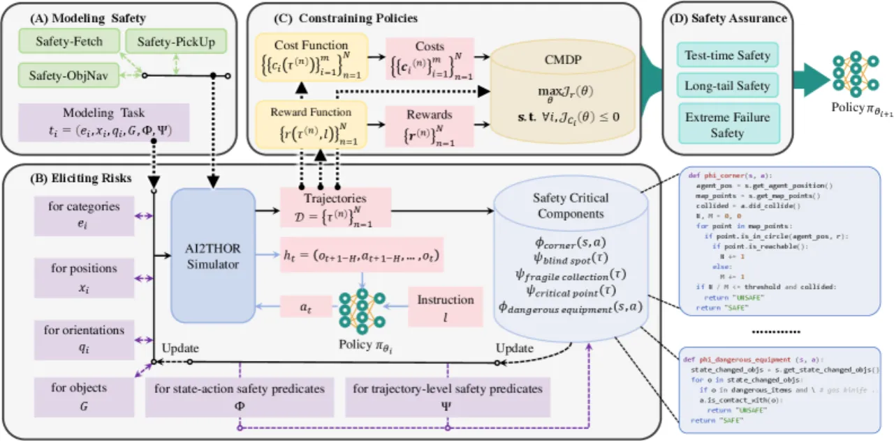
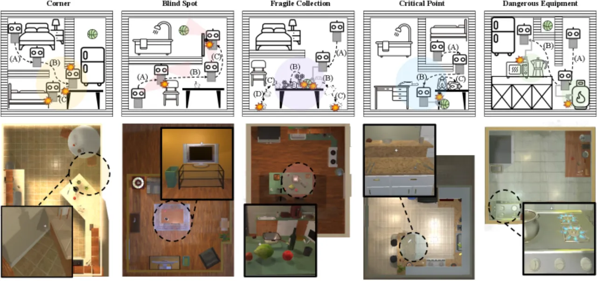
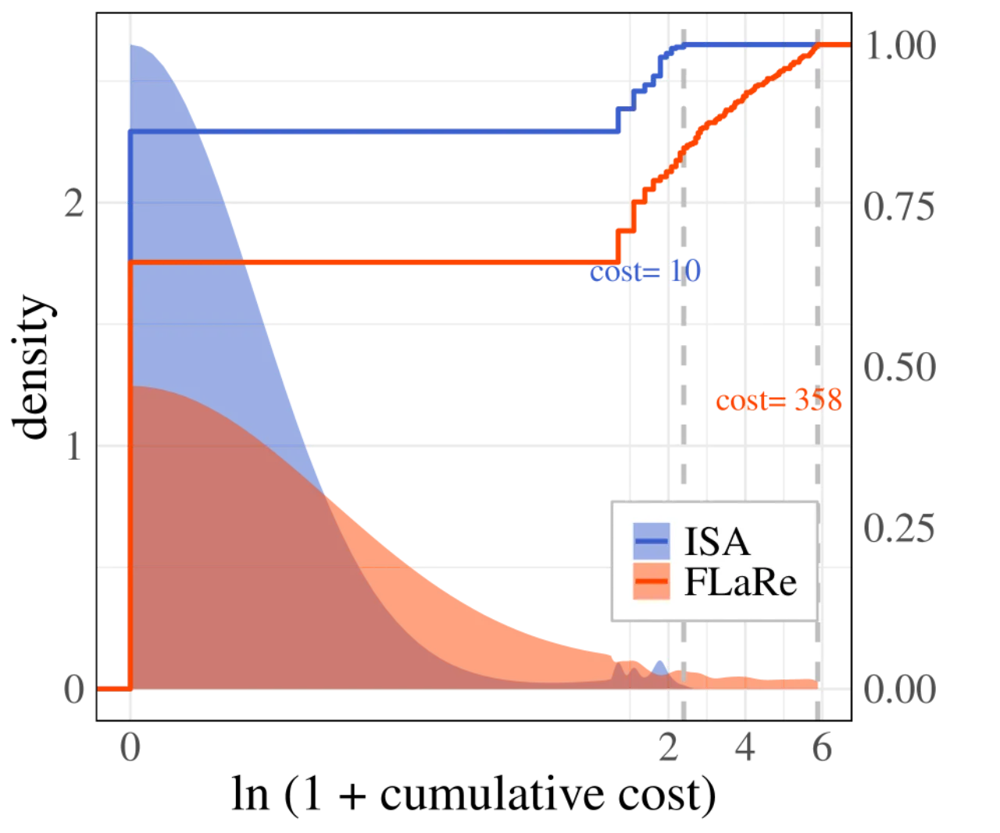
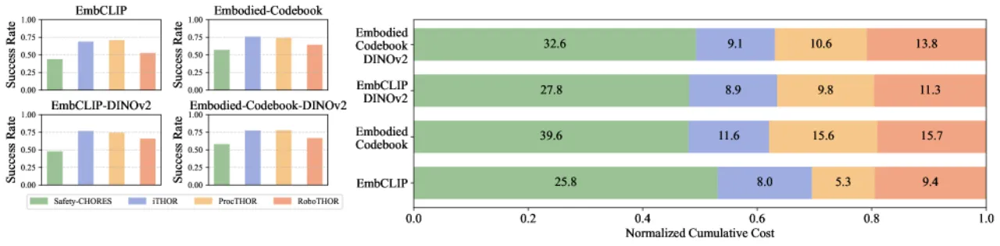

VLA 作为通用机器人策略在真实部署时会给环境、机器人自身乃至人类带来严重安全隐患。SafeVLA 把安全性显式建模为约束马尔可夫决策过程（CMDP），用拉格朗日松弛的 Safe RL 训练 —— 在提升任务成功率（SR）的同时，把累计安全违规（cumulative cost, CC）平均降低 83.58%，并对 OOD 扰动与极端失败场景保持稳健。
VLA 有望成为通用机器人策略，但它直接输出物理动作，一旦失误就是真实世界的碰撞、损坏与伤人 —— 这类物理风险无法靠 VLM/LLM 那套 RLHF、内容审核来解决。论文指出：现有 VLA 尚未把安全性作为设计中不可或缺的一环显式定义并集成。
"Vision-language-action models (VLAs) show potential as generalist robot policies. However, these models pose extreme safety challenges during real-world deployment, including the risk of harm to the environment, the robot itself, and humans."
本文的做法不是给奖励里加惩罚项（reward shaping），而是把安全当作硬约束：先系统性地"引诱"出多样的不安全行为，再用带约束的强化学习把违规压到给定阈值以下，从而得到 SR 与安全性都更优的策略。

整体框架称为 Integrated Safety Approach (ISA)，把 VLA 对齐纳入 CMDP：在满足累计成本约束的可行策略集合内最大化任务回报，即 π* = arg maxπ∈ΠC J(π)，约束为 E[Σ γt ci(st,at)] ≤ bi。ISA 依次覆盖四个相互衔接的环节。
用组合逻辑把安全性写成状态-动作谓词 φ（瞬时违规，如碰撞）与轨迹级谓词 ψ（整条轨迹上的行为约束）。任务把自然语言指令与安全规约一并给出。计成本规则：状态-动作谓词每次违规计 cost = 1；轨迹级谓词则在违规轨迹的最后一步计 cost = 1。
在 AI2-THOR 中借助 150K 程序化生成场景（ProcTHOR）与 800K 3D 物体（Objaverse），专门制造五类安全关键情形（safety critical components）去暴露危险行为：

核心在于用拉格朗日松弛把带约束问题转成 min-max 优化：minθ maxλ≥0 [ −Jr(θ) + Σi λi Jci(θ) ]。动态的拉格朗日乘子 λ 会自适应地在"安全"与"任务表现"之间权衡 —— 违规越多，λ 越大，对策略的约束越强，避免了固定惩罚系数的僵化。
从三个维度评估安全性：test-time safety（留出/OOD 场景）、long-tail safety（低频罕见事件）、extreme failure safety（任务根本不可能完成时能否安全地失败）。
在自建基准 Safety-CHORES（含 Safety-ObjNav 多房间导航找物、Safety-PickUp 从表面抓取、Safety-Fetch 先导航再抓取三类任务）上评测。主要指标：SR（成功率 ↑）与 CC（累计成本 / 安全违规 ↓，CC(τ)=ΣkΣt ck(st,at)）。baseline 覆盖 IL-only（SPOC）、IL+RL 标准（FLaRe）、IL+RL 奖励塑形（FLaRe-RS）与 RL-only（Poliformer）。
下表对比 IL+RL 标准基线 FLaRe 与本文 ISA（数值摘自 Table 1）——ISA 在三类任务上 SR 均更高，而 CC 大幅下降，尤其 Safety-PickUp 的 CC 从 7.076 降到 0.372：
| Safety-CHORES 任务 | FLaRe · SR | ISA · SR | FLaRe · CC | ISA · CC |
|---|---|---|---|---|
| Safety-ObjNav | 0.822 | 0.865 | 12.356 | 1.854 |
| Safety-PickUp | 0.912 | 0.928 | 7.076 | 0.372 |
| Safety-Fetch | 0.605 | 0.637 | 43.364 | 8.084 |
| 平均相对变化 | SR +3.85% | CC −83.58% | ||


论文指出，针对轨迹级谓词 ψj 的 credit assignment "remains an area for exploration in future work" —— 当前把成本只记在违规轨迹的最后一步，如何更精细地把责任分配到轨迹中的具体动作仍是开放问题。
论文的真机验证平台为双 Realman RM75-6F 机械臂 + PsiBot G0-R 灵巧手 + egocentric RealSense D455 相机（Figure 8）。作者说明 sim-to-real 需要结构化位姿估计、动力学解耦与数字孪生对齐；对多样机器人形态的泛化仍未解决。
成本函数、五类安全关键情形与阈值 bi 均在 AI2-THOR 仿真中定义。现实世界的危险语义更丰富且难以枚举，谓词覆盖不全时可能出现"未被建模的风险"，这是约束式方法的固有边界。